Through the course of this homework, I built the different parts of the rendering process (rendering and antialiasing). Learning about the different methods of antialising and their tradeoffs was very interesting since this gave me a more hands-on approach to learning about when to use bilinear pixel sampling vs something like supersampling.
Learning about the relationship between barycentric and cartesian coordinates as well as how both are used in rendering was probably the most interesting part of this project.
Task 1: Drawing Single-Color Triangles
Process: I begin by forcing a counter clockwise winding order. This is accomplished by evaluating the cross product of the edge vectors derived from the given vertices. If the product is negative, this implies a clockwise winding order and we swap the values of (x1, y1) and (x2, y2). Afterwards, I find the dimensions of the bounding box using min and max on the provided points, labeling them min_x, min_y, max_x, and max_y. Using these bounding box dimensions, I can verify if all possible sampling locations within the triangle are valid by verifying that the minimum x and y are greater than or equal to 0 and the max x and y are less than width and height respectively. Traversing through the bounding box in a nested for loop, we conduct the three line test on each pixel (found by flooring every sample to find the closest pixel) and if the pixel passes, we fill that pixel. The triangle is finished rasterizing when every pixel in the bounding box has been checked.
Challenges: Challenges: When first implementing my winding order, I didn’t notice the swap function used in rasterize_line and instead tried to use temporary values to store x1 and y1 before swapping (x1, y1) and (x2,y2). Although this could’ve worked, I didn’t properly dereference the temp values so when I set tempx1 to x1 and changed set x1 = x2, tempx1’s value was also changed to the value of x2. This caused the bounding boxes to break. This was fixed using the provided swap instead. Second, I didn’t properly set the dimensions of my bounding box. I had forgotten to floor min_x and min_y and ceil max_x and max_y causing the outermost pixels to not be properly checked. This caused thin white lines in polygons made of multiple triangles.
Speed: Since my triangle rasterization process is made of checking each pixel within the bounding box, this is no slower than checking each sample within the bounding box. It is just as fast since it’s the same process as the one described in the prompt.
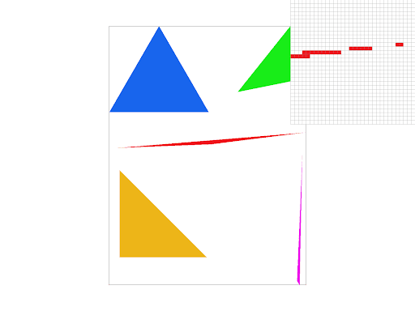
Task 2: Antialiasing by Supersampling
Purpose: Supersampling is used to artificially increase the clarity of images without necessarily requiring better displays. In graphics with sharp angles or more textured surfaces (high frequencies), sampling at too low a rate causes a jagged appearance when trying to capture them. Supersampling works by increasing the rate at which we take these captures or samples, allowing us to better see the details in these images. This follows the Nyquist Theorem which states we get no aliasing from frequencies in the signal (in our case, graphics) that are less than half the sampling frequency. Supersampling also serves as a cost saving measure since you don’t necessarily need a better display. Through downsampling, the detailed capture that supersampling took can still be used to create a more accurate image even at a lower resolution.
Process: I started out by rewriting all appearances of resize(sample_buffer) to now be of the capacity height * width * sample rate. That’s because for each pixel, we want to take (insert value of sample rate) samples. For rasterize_triangle, I added another pair of for loops within my nested for loop created in task 1. Now, I was traversing every x,y value within the bounding box as well as the subspaces within each pixel, bound by sqrt(sample_rate) in both dimensions. When a sample passed the three line test, instead of filling in that pixel, I wrote. sample_buffer[(y * width * sample_rate) + x + ind] = color, where ind represents the index of the current sample being checked within the pixel. If it failed, the sample was left white. We can no longer call fill_pixel directly, even if we took the average color of each pixel prior to filling it in. This is because this blending would only occur on a triangle to triangle basis. If for example, a red and blue triangle overlapped, the pixel would be filled in as blue or red rather than purple since the two instances of rasterize_triangle can’t communicate. Finally, in resolve to framebuffer, we downsample. Going through each pixel, we run a for loop from 0 to sample_rate. We get the average rgb values of the samples from each pixel by using the built in vector addition for each color before scalar multiplying by 1/sample_rate, giving us the average color of the pixel. We use toHex() to retrieve the rgb values of our average color in unsigned char form before adding them to the framebuffer_target.
Challenges: My first major problem was that I started out accessing the sample_buffer incorrectly, causing the image to blur the more I supersampled. I forgot to account for the added capacity of the sample_buffer when implementing supersampling due to the increased sample rate. I was still adding to the sample buffer like [y * width + x]. This was fixed by changing these instances to [y * width * sample_rate + x].
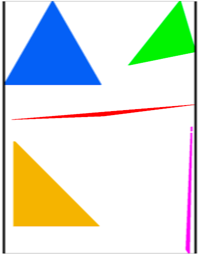
Improper sample buffer accesses cause blur
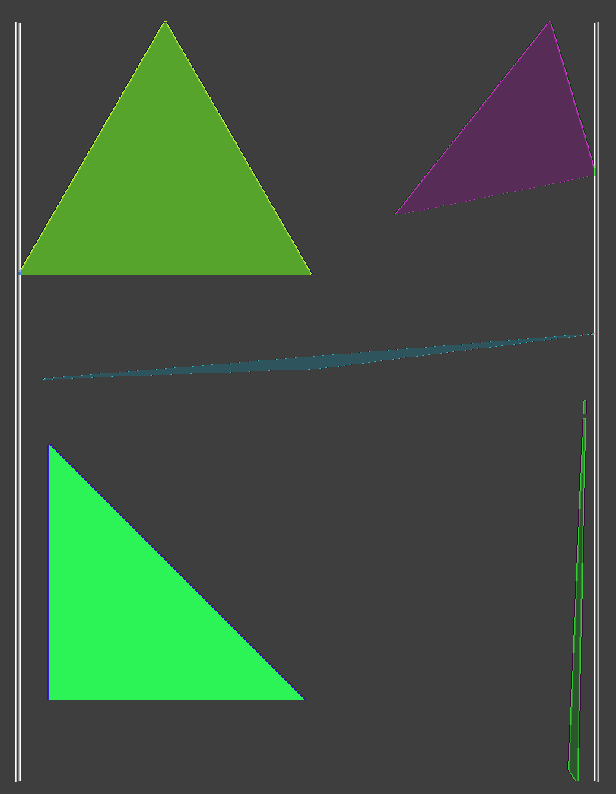
Overflow error causes inverted colors
Points to Note: Although gains diminish with increased sampling rate, the difference is clear. Although the effect is a little less observable on the equilateral and right triangle since their edge vectors tend to pass through the center of pixels, the difference is clearer in the sharper triangles where only the corner edges of the outermost pixels might be reached which is where supersampling comes into play. The differences can be seen on the left corner of the red triangle where the angle is sharpest
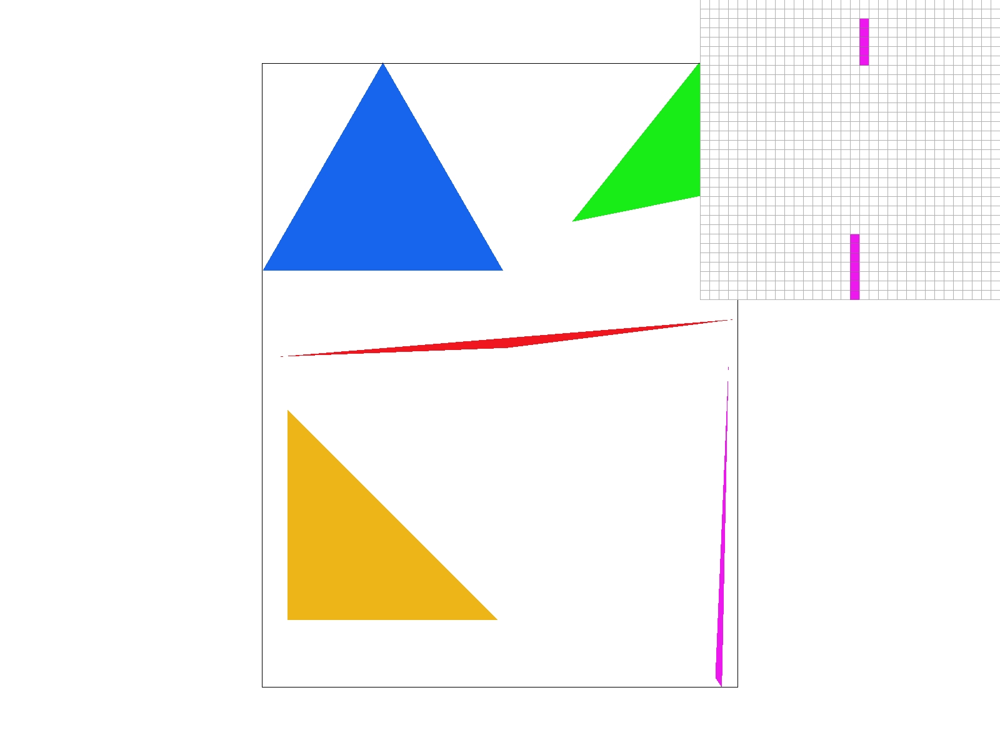
Sampling rate 1
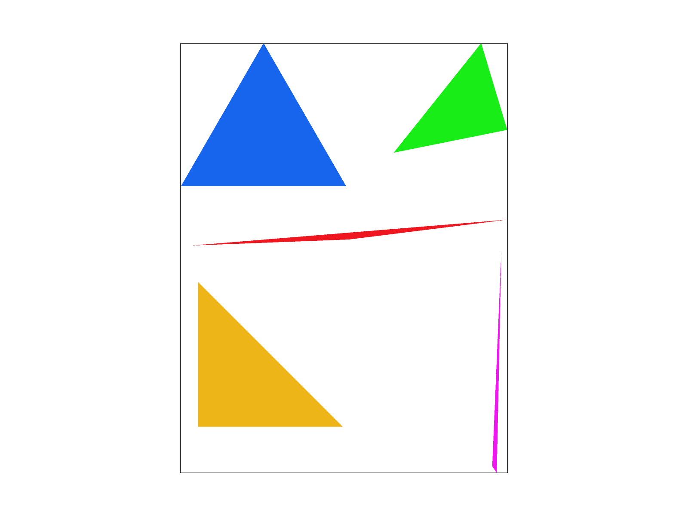
Sampling rate 4
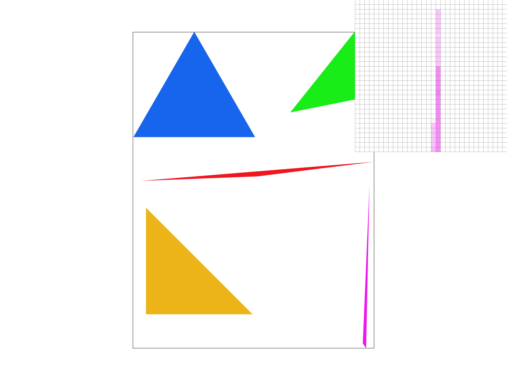
Sampling rate 16
Task 3: Transforms
Process: This task was pretty straightforward and just involved making the matrices seen in discussion. I didn’t run into any issues while solving the problems although using homogeneous coordinates to represent points and vectors was a very interesting topic to learn. My robot’s running towards you. Yes, you specifically. (FLINT LOCKWOOD)
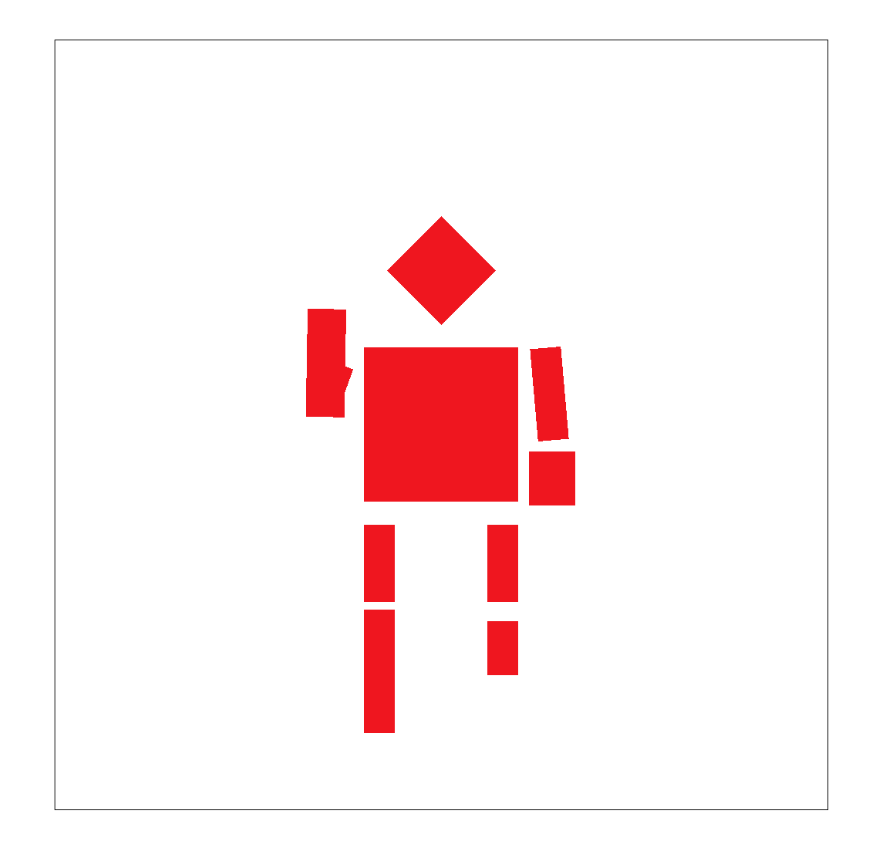
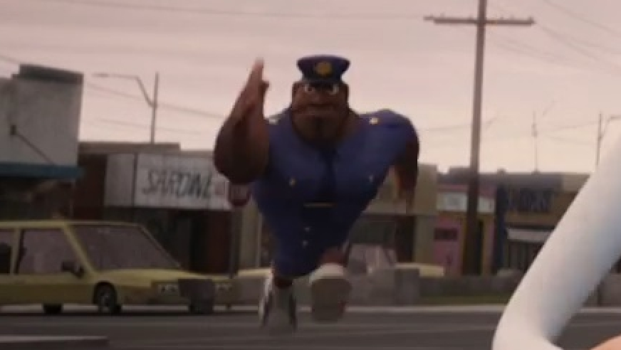
Task 4: Barycentric coordinates
What are barycentric coordinates Imagine you’re placed on a tightrope and it’s your job to determine how far you are from either edge. Well, that’s easy since you can just find the distance from where you are to one side and then subtract that from the total length of the tightrope to get your distance from the remaining side. This becomes a lot harder to measure when we introduce a third point. Barycentric coordinates are a coordinate system specifically designed for triangles where each point inside the triangle is represented by P = aA + bB + cC where A, B, C represent the vertices and a, b, c represent the weights of their respective edges. Barycentric coordinates linearly interpolate values at the vertices to find a point’s “distance” from each vertex. This can be used like in the image above to blend the three different colors at each corner.
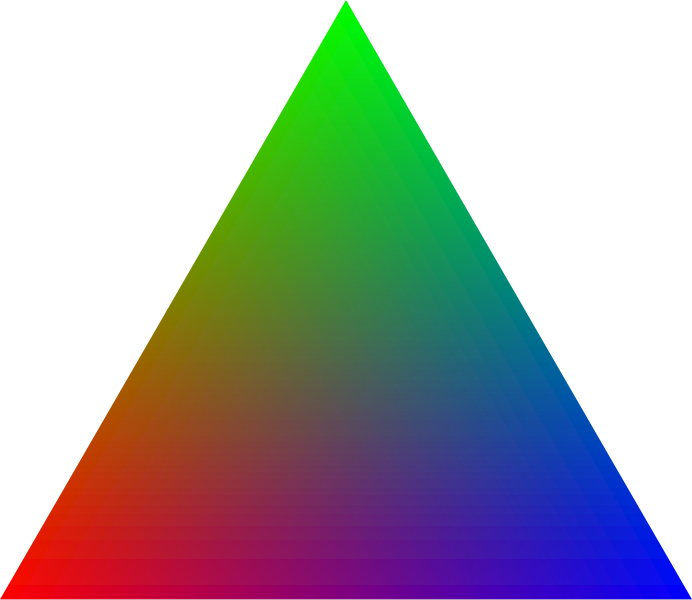
Each point's color is based on its distance from the corners
Process: All changes were made in rasterize_color_triangle. Recycling the winding order and bounding box code used in task 1, instead of performing the three line test on each point, we instead perform linear interpolation to get the edge weights of each point a, b, c. Using this, I scalar multiply each weight with their vertex’ respective color. These three colors are then added together before being added to the sample buffer for that point.
Challenges: A problem I ran into was getting an odd white line running through part of my color wheel. Upon reading the ed forum, I learned that I should have been using doubles wherever I had been using floats in order to get more specific sampling.
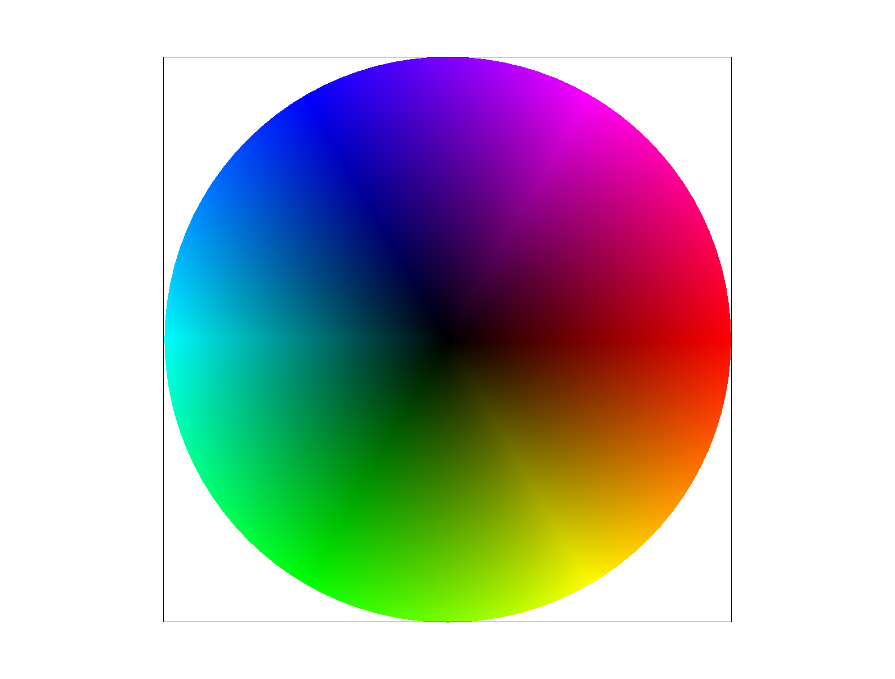
Task 5: "Pixel sampling" for texture mapping
What is pixel sampling? Prior to this, we have been assuming that at each point we sample, there is a color at that point, but what if there isn’t? Alongside our screen space, we introduce a texture space, storing the actual values at each point along a different coordinate system. What this allows us to do is manipulate our textures without having to change our screenspace. This allows us to increase or decrease clarity when necessary by mapping the screenspace to texture maps of varying qualities. For this homework, the two methods of pixel sampling we implemented were nearest and bilinear. Nearest is straightforward, assigning the point being sampled to the closest texel on the texture map. Bilinear sampling is a bit more complicated, with the 4 nearest texels to the point being sampled and averaged out to retrieve a middle ground for that point. The distance between the point and each texel also applies to how much of an influence the texture of that texel has on the final texture of the point.
Process: I first started working in Texture.cpp. Implementing nearest neighbor was relatively straightforward. I started by getting the effective u and v value of the provided point by taking the provided u and v from the 2Dvector and multiplying them by the width and height of the mipLevel object respectively. Next, I just rounded the u and v to get the nearest texel, clamping to the width for u and height minus 1 for v to avoid “looking outside of the triangle” when getting the texel’s color. For bilinear sampling, I repeated the steps of retrieving the effective u and v. Then, I obtained the colors of the 4 nearest neighbors by using a combination of flooring and ceiling the u and v values (e.g, the bottom left corner would be floor(u), floor(v)). I made sure to clamp these to the width and height too just like in nearest neighbor. I then got the s and t value of the point, basically how far to the right and top the point is. Then, I performed a horizontal linear interpolation between the bottom two neighbor colors with the s value, repeating this step with the top two. Finally, with the horizontal lerps of the colors corresponding to the top and bottom neighbors, I performed a vertical lerp between the result of the horizontal lerps, using t instead of s. For rasterize_textured_triangle, I copied most of my code from task 2. After confirming that a sample was within the triangle however, instead of adding the color to the sample buffer, I translated the cartesian x and y coordinates into barycentric coordinates using my code from task 4. I then took my translated u and v and put them into a 2DVector struct before putting them through whichever sampling method was selected.
Challenges: Two major problems I ran into were graininess in the image and a sort of tearing effect. The tearing was caused by me initially using the raw u and v values provided in the parameters. This was fixed by multiplying the u and v by the mip width and height. Another issue was graininess, most noticeable at supersampling rate of 1. This was caused by a rounding issue in my rasterize_triangle function when determining if a point was within the triangle. Another smaller issue was the appearance of an odd line in some of the images, caused by the sampling methods looking outside of the triangle for neighbors. This was a result of me neglecting to clamp the values initially.
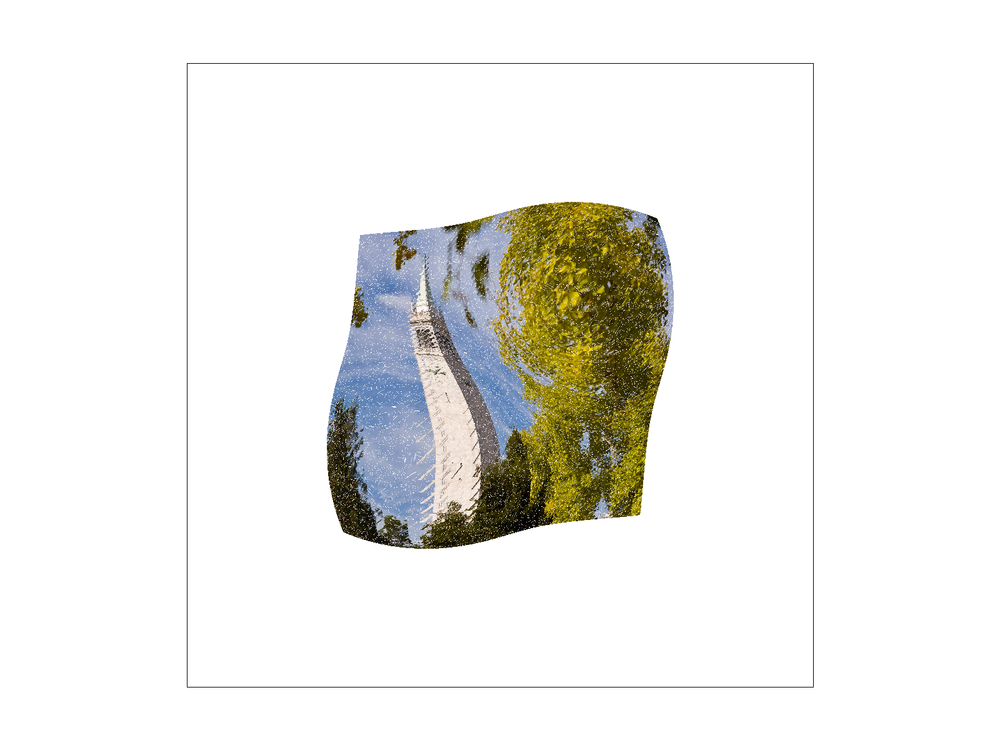
Points to Note: The difference is most noticeable at lower sampling rates. The inside of the tower with nearest is clearly grainier than bilinear sampling. This difference is less clear with higher sampling rates since the nearest neighbor is now more precise and blended after downsampling which softens harsher contrasts. Still, you can see that bilinear sampling is still smoother, if a bit more dull. I think these differences are most noticeable with lower resolution texture maps where differences in color from pixel to pixel will be a lot more drastic since they can’t be blended due to the lack of details which can be somewhat compensated by with bilinear sampling.
psm=nearest, sample rate=1
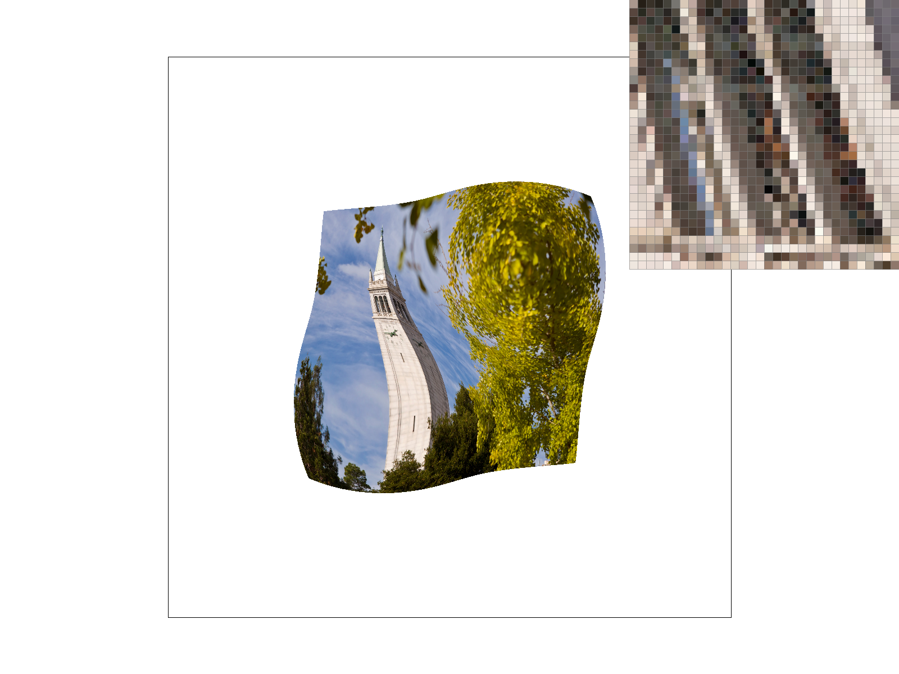
psm=bilinear, sample rate=1
psm=nearest, sample rate=16
psm=bilinear, sample rate=16
Task 6: "Level Sampling" with mipmaps for texture mapping
What is level sampling? Level sampling is a method for more process-efficient rendering. When something’s up close, we can notice small details and maybe even small faults but far away, these details and mistakes blur and smudge causing us to only see the larger features. If we can’t even see these minute details from far away, why do we need to render them? In level sampling, we can measure this quality drop off with the relationship between screen space and texture space. If we have a detailed texture map but only 50 pixels or so will actually be generated, it is a waste of processing power. Level sampling solves this by holding multiple different texture maps for the same object at decreasing granularity depending on the needed quality. Level sampling is used for antialiasing without the need for supersampling which is comparatively more cost-inefficient.
Process: We needed to implement 3 kinds of level sampling: zero, nearest, and linear. Zero is straightforward, always using the highest quality mipmap no matter the needed quality. Nearest rounds the result of our needed mipmap level which is a float, assigning the closest level mipmap (an integer) to the float value. Linear is trickier, requiring us to linearly interpolate the two nearest levels to our needed mipmap level, using the distance between our needed level and the levels being sampled to weigh how much each level will affect the final color/texture. I started in rasterize_textured_triangle, making small modifications. In addition to translating (x,y) to barycentric coordinates like before, I did the same with (x+1,y) and (x,y+1) which will be used to find the rate of change in the vectors. I added all the necessary parameters to a SampleParams struct sp. In get_level of Texture.cpp, I created the deltax and deltay vectors by subtracting the barycentric vectors (x+1,y) - (x,y) and (x,y+1) - (x,y) respectively before multiplying each coordinate by the width and height.Using these vectors, I calculated L as described in class before returning the clamped value of log2(L), with the lower range being 0 and higher range being mipmap.size()-1 to prevent negative levels or levels that don’t exist. In sample, I used nested if statements to get every combination of psm and lsm. Level sampling of zero and nearest were simple to implement, using the zeroth level or the rounding log2(L) to find the closest level. For linear, I first sampled the colors from floor(log2(L)) and ceil(log2(L)), the two closest levels to our desired one. Then, I performed lerp on these values and our L which looked like lerp(log2(L), floorcol, ceilcol) which gave me the inbetween color I needed.
Points to Note: Here, we can see that using the best quality mipmap is not always going to produce the best quality result as seen with the top photo. We can also see that bilinear sampling mitigates this aliasing but it might not be the antialiasing method we wish to use, or maybe it’s not enough. Bilinear sampling and nearest level sampling can be combined to produce a clearer, albeit expensive image. Even just using l_nearest on its own and getting an appropriate quality mipmap reduces aliasing by not providing too much detail that would not be properly captured in the final photo.